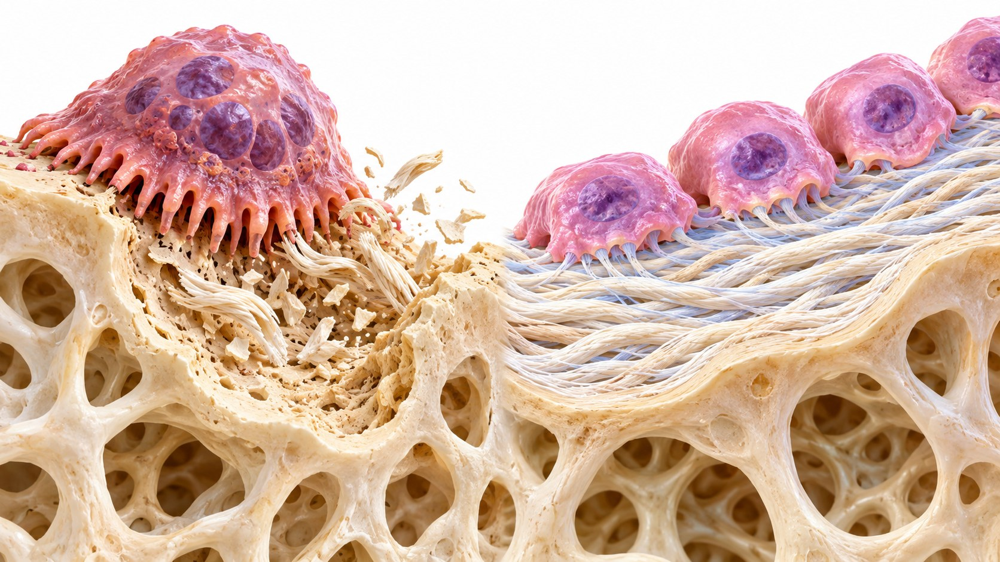

CLINICAL LEARNING · 아산 28회
골표지자
CTX · P1NP
채혈 조건에서 초기 치료 반응 해석까지
정적 골량과 동적 골교체율을 함께 본다


교재가 제시한 활용 범위와 판단의 무게
골흡수와 골형성을 분리해 측정한다
골흡수 1종 · 골형성 1종
야간 공복 후 아침 채혈 · 동일 검사실
표지자와 약물 기전에 따라 시간축이 달라진다
빠른 억제 반응과 장기 골밀도 결과를 구별한다
기관별 참고값 · LSC · 전후 변화
1–3개월의 변화량·변화율을 해석한다
CTX와 P1NP의 전처리·임상 조건
| 영향 요인 | CTX | P1NP |
|---|---|---|
| 일중 변동·음식 | 변이 고려; 공복 아침 채혈 | 음식 섭취 영향이 비교적 적음 |
| 혈당 상태 | 영향 고려 | 동일 조건에서 전후 비교 |
| 신부전 | 영향을 받음 | 영향을 받음 |
| 검사법·검사실 | 같은 검사실·표준화 조건 유지 | 같은 검사실·표준화 조건 유지 |
작은 골교체 변화에도 BMD가 유지될 수 있다
순응도 → 복용 조건 → 흡수 → 이차 원인
골흡수·골형성 표지자 각 1종이라는 조건
채혈 조건에서 초기 치료 반응 해석까지